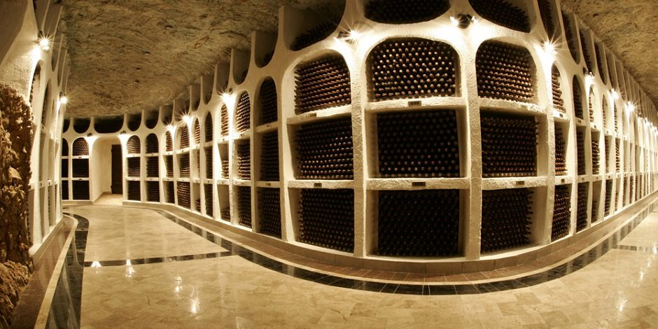
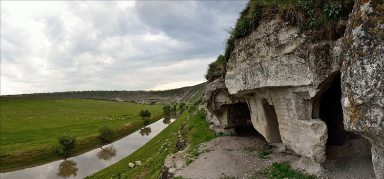
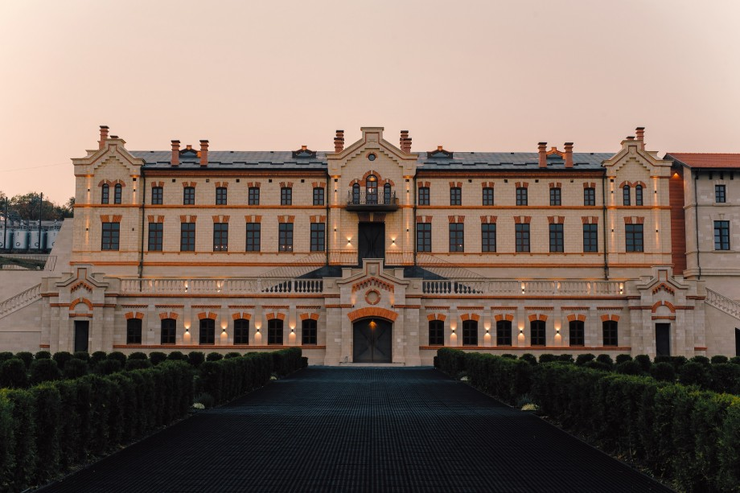

Ce vizităm în Republica Moldova?
Chișinău

Chișinău este capitala Moldovei și cel mai mare oraș al țării. Este un oraș prietenos și modern, cu o mulțime de clădiri istorice. Chișinău se mândrește și cu o serie de parcuri și grădini frumoase, dar și cu muzee și galerii de artă ce merită explorate. Parcul Memorial este vestit cu piramida portocalie dedicată soldaților care și-au pierdut viața în timpul celui de-Al Doilea Război Mondial, rătăcește prin Parcul Pușkin, Gradina Botanica, Parcul Dendrariu, admiră frestrele din Catedrala Mitropolitană Nașterea Domnului, vizitează Biserica Sfântul Teodor Tiron și admiră Arcul de Triumf.
Cricova
Vinurile din Republica Moldova au început să devină din ce în ce mai apreciate de experții internaționali, iar cramele de din această țară sunt unele dintre cele mai fascinante destinații turistice. Începe-ți excursia pe drumul vinului la Mileștii Mici, la 30 de minute de mers cu mașina de Chișinău. Cramele de aici se află în Cartea Recordurilor ca cele mai mari crame din lume, cu peste 1,5 milioane de sticle aranjate într-un labirint subteran de 55 kilometri. Apoi vizitează și cramele Cricova, perla vinurilor moldovenești, unde poți degusta cele mai delicioase soiuri.
Orhei
Orheiul Vechi este considerat drept cea mai frumoasă zonă din Moldova, un complex cultural, istoric și arheologic aflat la aproximativ 60 de kilometri de Chișinău. Aflat în valea râului Răut, Orheiul Vechi te va surprinde cu peisaje naturale de excepție, cu dealuri abrupte din calcar. În această zonă se află mai multe monumente și clădiri antice împrăștiate pe întreaga vale ce datează din diferite perioade istorice începând cu secolul X î.Hr. și până în secolul al XIV-lea e.n. Aceste fortărețe antice și mănăstiri sunt printre cele mai neobișnuite monumente din Europa de Est. Mănăstirea Orheiul Vechi este săpată într-o stâncă uriașă de calcar a cărei frumusețe atrage o sumedenie de vizitatori din întreaga lume. După ce vizitezi toate monumentele și bijuteriile arhitectonice din Orheiul Vechi, fă o excursie și până la muzeul cu același nume unde poți afla povestea acestor locuri minunate.
Bulboaca
Monument de importanță națională, Castel Mimi este construit în continuarea conacului familiei cu același nume: Mimi. I-a aparținut politicianului Constantin Mimi, un basarabean care a studiat viticultura și vinificația la Montpelier, în Franța. De aici și pasiunea pentru vin și decizia de a da naștere unei podgorii proprii.Rodul vițelor de vie este îmbuteliat în sticle de diferite soiuri, dintre care cel mai apreciat este Roșul de Bulboacă.